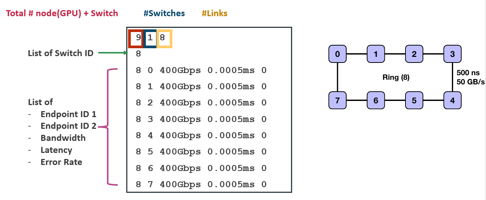

ns-3 Network Backend
Note
The below documentation is a copy-paste of a recent email. We posted the documentation here considering the urgency, but will strive to update /clean up as soon as possible.
Running the ns3 backend.
There have been some changes to the execution/build script recently. Please pull the most recent commit from the github repo. Compiling the ns3 backend is similar to the analytical backend. bash build/astra_ns3/build.sh And running the ns3 backend is done with the following command:
# {NS3_DIR} is the directory of the ns-3 backend. That is, '{ASTRA_SIM_ROOT_DIRECTORY}/extern/network_backend/ns-3'
cd "${NS3_DIR}/build/scratch"
./ns3.42-AstraSimNetwork-default \
--workload-configuration="${SCRIPT_DIR:?}"/../../extern/graph_frontend/chakra/one_comm_coll_node_allgather} \
--system-configuration="${SCRIPT_DIR:?}"/../../inputs/system/Switch.json \
--network-configuration="../../../ns-3/scratch/config/config.txt" \
--remote-memory-configuration="${SCRIPT_DIR:?}"/../../inputs/remote_memory/analytical/no_memory_expansion.json \
--logical-topology-configuration="${SCRIPT_DIR:?}"/../../inputs/network/ns3/sample_8nodes_1D.json \
--comm-group-configuration=\"empty\"
This can also be achieved with
bash build/astra_ns3/build.sh -r
Note the ‘-r’ flag. If you examine the top of the build script, you’ll be able to find how to change between different configuration files
Configuring the ns3 backend.
In the execution script above, note the two flags --network-backend and --logical-topology. Note that in the analytical backend, we only used the --network backend. This is because, in the analytical backend, the logical topology and physical topology was the same, while ns3 allows us to separate logical and physical topology. More on this later.
Let’s observe the --network-backend flag first. This is the configuration file that configures the NS3 simulator itself. This is why, uniquely, the path after --network-backend is relative to {NS3_DIR}/scratch/...
If we open the file astra-sim/extern/network_backend/ns-3/scratch/config/, we see the following file.
USE_DYNAMIC_PFC_THRESHOLD 1
PACKET_PAYLOAD_SIZE 1000
TOPOLOGY_FILE ../../scratch/topology/8_nodes_1_switch_topology.txt
FLOW_FILE ../../scratch/output/flow.txt
TRACE_FILE ../../scratch/output/trace.txt
(...)
Here, the “TOPOLOGY_FILE” knob points to the file which defines the physical topology.
144 16 192
128 129 130 131 132 133 134 135 136 137 138 139 140 141 142 143
0 128 200Gbps 0.005ms 0
1 128 200Gbps 0.005ms 0
2 128 200Gbps 0.005ms 0
(...)
135 142 200Gbps 0.0125ms 0
135 143 200Gbps 0.0125ms 0
Please have a look at the image below for the format description. This is how the physical topology (e.g. gpus, wired connectivity between gpu, etc.) is defined. This is the way to define the fat tree topology Each line starting from the third line (“0 128 200Gbps…”) defines a link. Note that in the above example, the links between switches 135 and 142 are the ‘upper’ links of the fat tree connecting the ToR switches and the spine switches.

For the other knobs in the ns3 configuration, please refer to the document in : ‘astra-sim/extern/network_backend/ns-3/scratch/config/config_doc.txt’
Now let’s talk about the logical topology. In a real world topology where 1 server node = 8 GPU, and 16 of these server nodes are connected through switches, it would seem ideal to run parallelization across the first 8 GPUs (intra-node-communication/e.g., 0,1,2,3,4,5,6,7) and then run parallelization across the 16 GPUs (inter-node-communication/e.g., 0,16,32,48,…). In this case, the logical dimension would be [8,16]. However, it is possible to run, for example, first dimension across collective across 32 GPUs (0,1,2,3,…,31), and then across a stride of 4 GPUs(0,32,64,96). In this case, the logical dimension would be [32,4].
The ns3 simulator’s --logical dimension flag allows the ability to test different logical dimensions that might differ from the physical topology. The file structure is pretty straightforward.
{
"logical-dims": ["8","16"]
}
Note that the number of logical dimensions (1D v. 2D v. 3D) must match the number of collectives in the system configuration, passed to --system-configuration.
# astra-sim/inputs/system/Ring_FullyConnected_Switch.json
{
(...)
"all-reduce-implementation": ["ring", "direct", "halvingDoubling"],
}
The above two examples would not work (the simulator might not complain, but semantically it wouldn’t be correct) because while we have a 2D logical topology, the system layer is prepared to run a 3D all-reduce implementation.